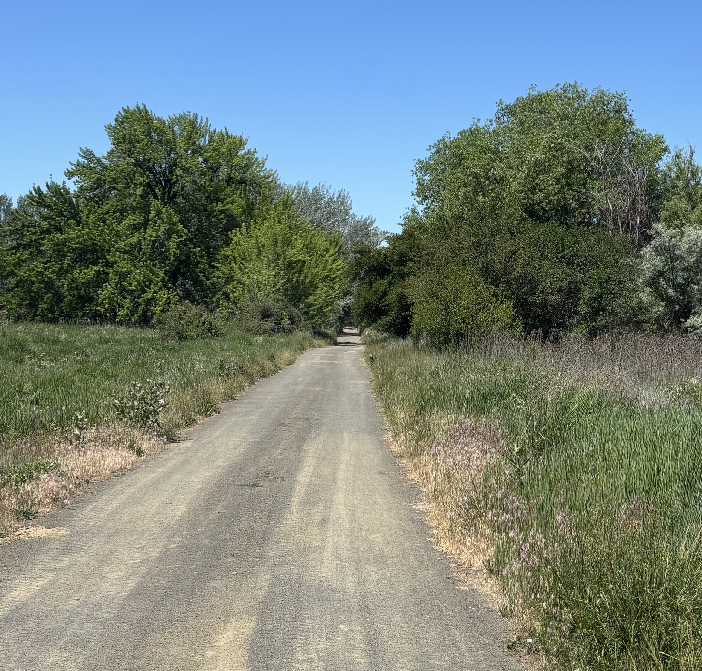
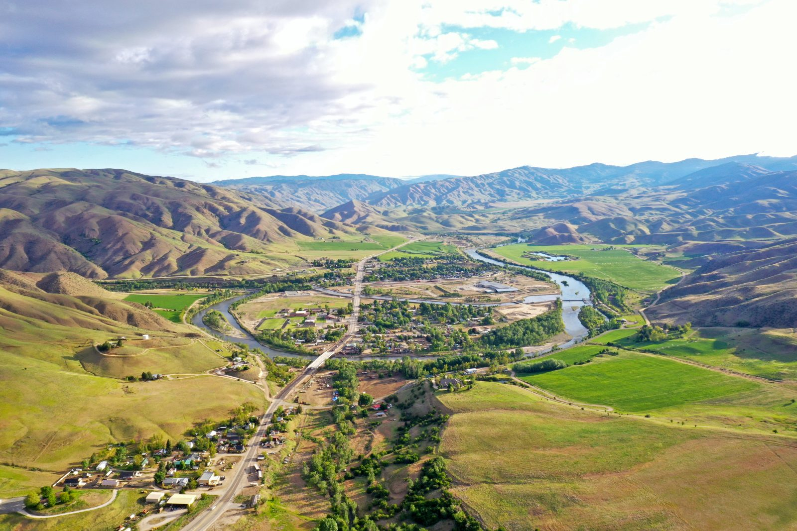
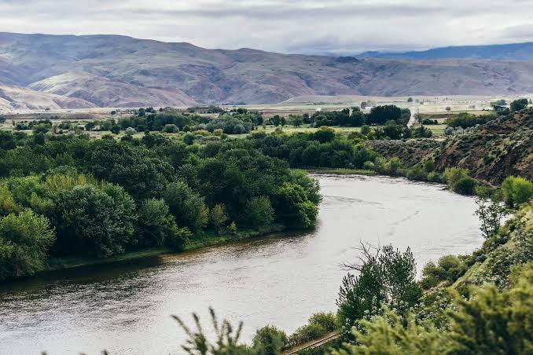

Sponsors


Everything you need to know before race day.
Familiarize yourself with the Sunken City Trail 5K course before race day. Review the route, key turns, and surrounding scenery to help you prepare for a successful race experience.
8:00 AM at Montour Campground.
9:00 AM sharp.
$25 per participant.
Race bib, professional timing, and post-race drinks.
The Sunken City Trail 5K will take runners through scenic trails surrounding Montour Campground. Expect rolling hills, beautiful foothill views, and a challenging but enjoyable course. Some more technical terrain exists with uneven surfaces and bumps.
Aid stations will be available throughout the course.
Awards will be given to the top 3 finishers in each category.
Proceeds from the race support high school runners pay for the upcoming season and summer runs.


